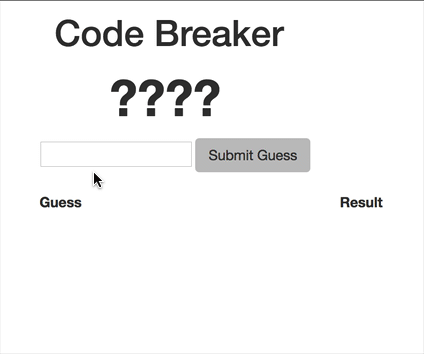

About Me
I am passionate about algorithms and coding. Elegant coding combined with efficient algorithms could solve complex problems within a few lines.
Throughout my career, I have developed strong abilities in analytical thinking and coding skills. I published a paper in data optimization, presenting two algorithms which transforms non-regular discrete data sets into regular data sets.
Recently, I am actively learning front-end development tools to improve my skill set. Thank you for checking out my personal page. If you're interested, feel free to contact me!
Projects
- Desgined a single-page website designed for cryptocurrency exchange and implemented responsive web pages.
- Developed a login/register system on the client end, using Javascript.
- Technique: HTML5, CSS3, Bootstrap, Javascript

This is a Code Breaker game using JavaScript. Based off the board game Mastermind, the game will randomly generate a hidden code and the player gets 10 attempts to guess that code based on provided feedback.

(Published by ASME at 39th Design Automation Conference)
Two indexing methods (n-D and Distance indexing) are presented in this paper which transform non-regular discrete data sets into regular data sets so that various optimization methods could be applied. Below is a table showing how the optimization methods perform using different indexing methods.